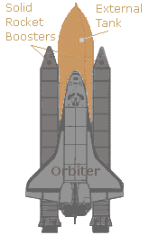

U.S. Space Shuttle (Space Transport System)
technical - external tank (et)

U.S. Space Shuttle (Space Transport System)
technical - external tank (et)
The main components of the Space Transport system (Space Shuttle) are the Orbiter Vehicle (OV), a pair of recoverable Solid Rocket Boosters (SRBs), and the expendable External Tank (ET) containing liquid hydrogen and liquid oxygen to fuel the shuttle's main engines.
The Shuttle was launched vertically, like a conventional rocket, with the two SRBs operating in parallel with the OV's three main engines.
The SRBs were jettisoned before the vehicle reached orbit, and the ET was jettisoned just before orbit insertion.
The ET contains the propellants used by the Space Shuttle main engines (SSME). The tank is also the "backbone" of the shuttle during the launch, providing structural support for attachment to the solid rocket boosters and orbiter. The tank is the only component of the space shuttle that is not reused.
At lift off, the external tank absorbs the total (7.8 million pounds) thrust loads of the Orbiter's three main engines and the two solid rocket motors. When the solid rocket boosters separate at an altitude of approx. 45 km, the orbiter's main engines remain burning. The orbiter and ET continue to near orbital velocity, approx. 113 km above the Earth.
The Orbiter's engines then cut out and the nearly empty ET is separated from it. The ET falls in a pre-planned trajectory with the majority of it disintegrating in the atmosphere and the rest falling into the ocean.

The main components of the ET are:
Oxygen tank - located forward,
Hydrogen tank - located aft,
Inter tank - a collar-like tank which connects the oxygen and hydrogen tanks
The Inter tank also houses instrumentation and processing equipment and provides the attachment structure for the forward end of the two solid rocket boosters (SRBs).
The hydrogen tank is 2.5 times larger than the oxygen tank but weighs only one-third as much when filled to capacity. The reason for the difference in weight is that liquid oxygen is 16 times heavier than liquid hydrogen.
The external tank also includes:
* A propellant feed system to duct the propellants to the orbiter engines,
* A pressurization and vent system to regulate the tank pressure,
* An environmental conditioning system to regulate the temperature and render the atmosphere in the inter-tank area inert,
* An electrical system to distribute power and instrumentation signals and provide lightning protection.
The tank's propellants are fed to the orbiter through a 43cm diameter connection that branches inside the orbiter to feed each main engine.
The skin of the external tank is covered with a thermal protection system that consists of a 2.5cm thick coating of spray-on polyisocyanurate foam. Its purpose is to maintain the propellants at an acceptable temperature and to protect the skin surface from aerodynamic heat and to minimize ice formation.

The external tank general specifications are:
Weight - Empty: 35,425 kg
- Gross: 756,445 kg
- Propellant - total: 719,115 kg
- Propellant - liquid oxygen: 616,496 kg
- Propellant - liquid hydrogen: 102,619 kg
Volume - Propellant - gross: 1,991,604 liters
- Liquid oxygen tank: 541,541 liters
- Liquid hydrogen tank: 1,450,063 liters